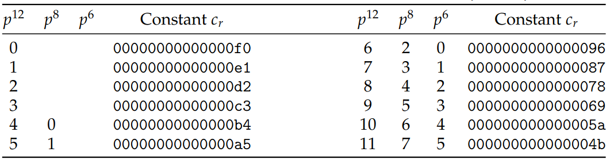

501 ASCON
ASCON is a cryptographic scheme. It was chosen as the winning candidate in NIST’s “Lightweight Cryptography”-competition. This announcement was made on February 7th, 2023.
Candidates that were submitted to this competition needed to have these two functionalities: authenticated encryption and hashing. For the project in this course, you’ll be making a SW-only and a HW/SW implementation of the hashing functionality. The complete specifications for ASCON can be found here.
Hashing
A hash function is a one-way function that generates a message of fixed length, from an input of an arbitrary length. (Have some fun on: this site, if you wanna play around a bit).

By definition:
- there will always be collisions
- even the tiniest change in the input, should result in a completely different hash digest (avalanche property)
Sponge-construction
When the ASCON hash digest of a message is to be calculated, the input is split in blocks of r bits. The rate ( r ) is, by default, 64 bits. Every r-bit block is absorbed by the sponge. The hash implementation keeps an internal state which is 320 bits wide. This internal state is manipulated and updated for each of the input blocks. The remaining (320 - r) = 256 bits is called the capacity ( c ).
Once all the input blocks are absorbed, it is time to squeeze out the digest. The default width of this digest is 256 bits and it is squeezed out in 4 operations which produce 64 bits (= r ) each.

For every hash calculation, the internal state is initialised by concatenating the following values:
- eight ‘0’-bits
- the size of the rate r, expressed in 1 byte
- the round number a, expressed in 1 byte
- the difference in round numbers a-b, expressed in 1 byte
- the size of the digest, expressed in 4 bytes
This constant is: 0x00400c0000000100. The remainder of the internal state is filled with ‘0’-bits.
Note that the message is ALWAYS padded. The message is padded with a binary ‘1`, followed by a number of zeroes to create a message length that is a multiple of 64 bits.
Permutation
A lot of cryptographic algorithms use some sort of permutation function. Although a permutation is a shuffle of a set of elements, this is not what the permutation does in many of these algorithms.
The permutation in ASCON consists of 3 different steps:
- pC: this step takes a 320-bit input and EXORs it with a round-dependant constant. The result, again, is 320 bits.
- pS: this step takes a 320-bit input and substitutes sets of 5 bits with 5 different bits. The result, again, is 320 bits.
- pL: this step takes a 320-bit input and diffuses the results over the state. The result, again, is 320 bits.
A full permutation p consists of p = pL ∘ pS ∘ pC.
A permutation as it is used in ASCON consists of a number of rounds. This means that the input is pulled through the 3 steps multiple times. The scheme provides 2 different round numbers: a and b. For the ASCON-hash function, both a and b are set to 12.


PC

PS

PL
Another visualisation of the same steps in the permutation is this:

Testvectors
An indispensable piece of information for this sort of work is a set of testvectors. These can be found here.